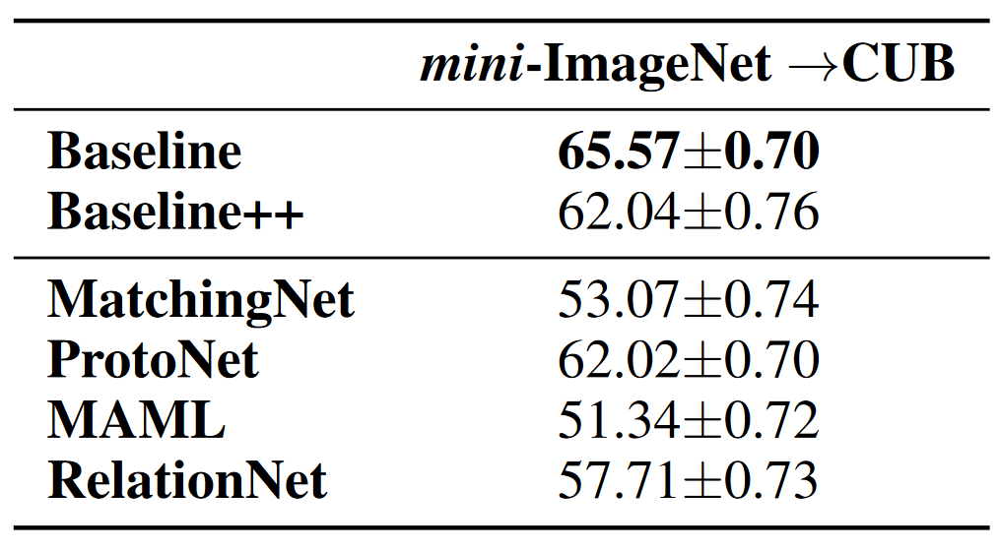
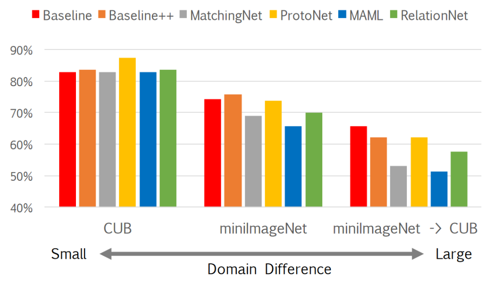
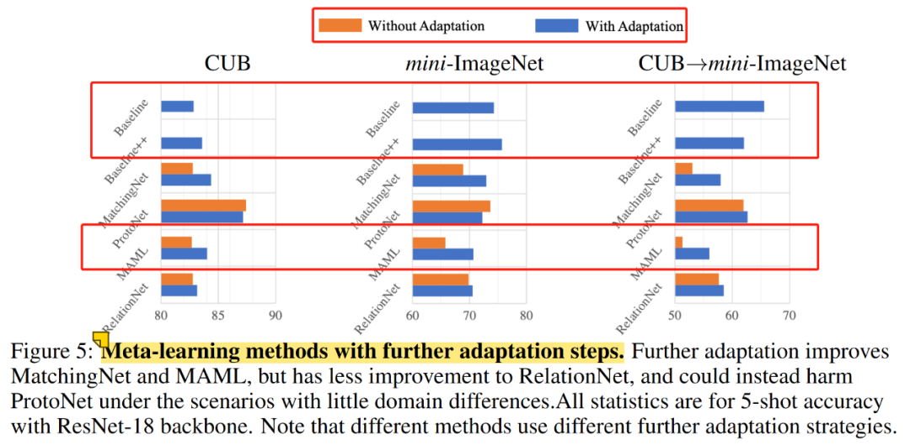
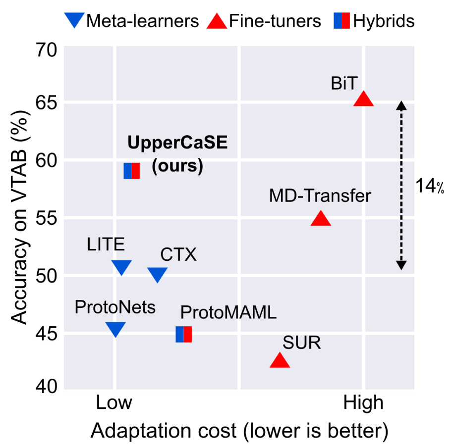
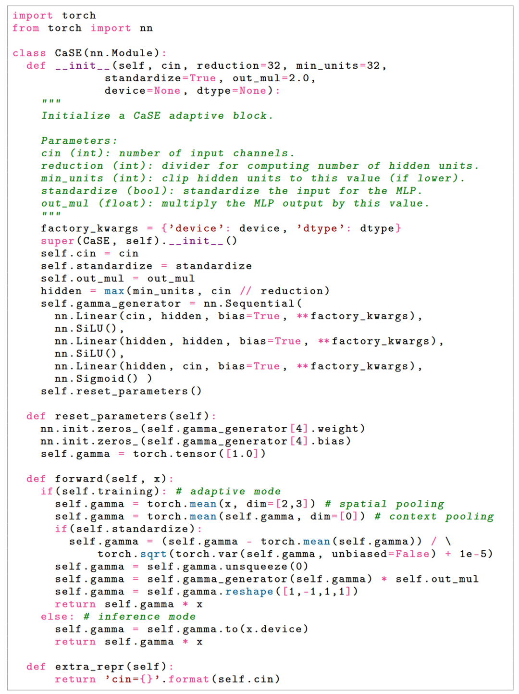
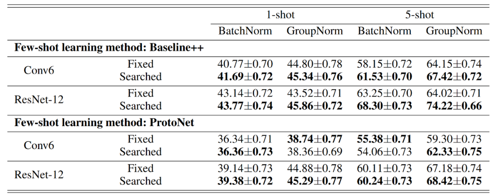
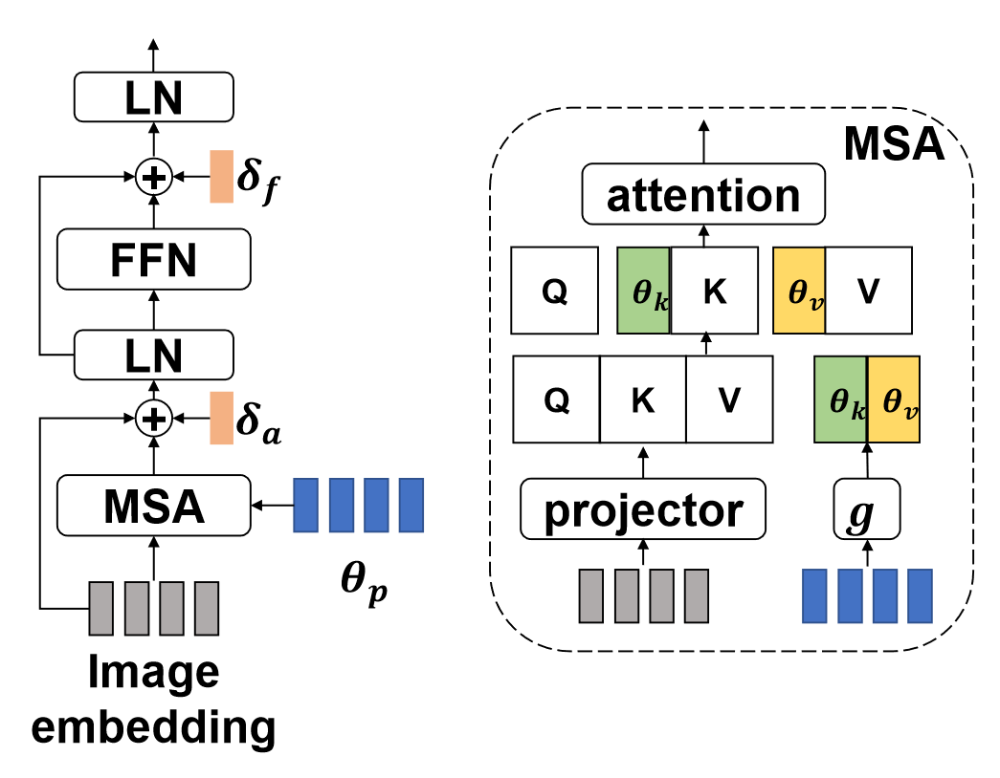

本文回顾了一系列不花哨的、实实在在的方法，讨论ConvNets和ViT预训练模型如何在小样本数据上更好的fine-tuning。
以下文章来源于皮皮嬉 ，作者嬉嬉皮
常规迁移学习中，源域和目标域间的分布偏移问题可以通过fine-tuning缓解。但在小样本问题中，可供fine-tuning的有标签数据不足(也就是常说的每个小样本任务中的support set)，分布偏移问题难以解决，因此面对小样本问题时，fine-tuning策略是需要额外关照的。本文回顾了一系列不花哨的、实实在在的方法，讨论ConvNets和ViT预训练模型如何在小样本数据上更好的fine-tuning。我们首先回顾两种baseline，再以此做一些延申。
Baseline
基于ConvNets经典的小样本图像分类文章[10]证明了基于距离分类器的baseline++可以打败很多sota meta-learning方法，验证了迁移学习在该项任务中的超能力。baseline及其改进版baseline++在微调时都固定了特征提取器(body)权重，而只微调分类器，二者只在分类器设计上有区别。标准的迁移学习pipeline中，全量的微调在有标签数据太少时效果不如linear probing，如下图，纵轴为全量fine-tuning准确率减去linear probing准确率的结果，横轴为不同数据集，不同颜色的柱状图标识不同的有标签数据量。我们看到在k很小时linear probing是更优的选择，k变大时，全量fine-tuning会逐渐夺回优势。
我们首先介绍baseline的流程：
- 先用特征提取器+线性分类器 Wb在基类数据上使用交叉熵从头开始训练;
- 再使用固定的特征提取器+新的可训练的线性分类器Wn在当前小样本任务中的有标签数据进行 fine-tune, 损失函数仍是交叉熵分类损失。
baseline的改进版baseline++ 训练过程与baseline一致，仍有Wb和Wn，但不再使用线性分类器。以Wb ∈ ℝd × c为例，可视为c个类别的d维原型表示，所以可以通过计算样本特征与它的余弦相似度并使用softmax得到最终的预测概率分布。得到的预测结果仍使用交叉熵分类损失。该分类器相比线性分类器可以进一步减少类内差异。
下表对比了baseline，baseline++与经典元学习算法的对比，注意使用了数据增强。结果上看，baseline是打不过元学习算法的，而baseline++则可以掰掰手腕，这说明了在小样本分类问题中减少类内差异的重要性。
不过上表基于较浅的四层卷积网络进行实验的，当网络更deep且源域与目标域域间分布差异不大时，上表几种元学习和迁移学习方法的性能差异会缩小，但如果网络deep但域间差异较大，基于迁移学习的策略还是会呈现出优势，如下图：(ProtoNet还是稳健，不愧经典广流传)
基于ResNet-18和更大的跨域问题时，也显示出了迁移学习策略baseline&baseline++的优势(下表)。元学习方法的meta-training阶段是在基类数据进行的，故其learn to learn能力也局限在基类分布内，正如我们看到的，在跨域问题时，在分布外learn to learn能力受到了影响。而baseline是对每个小样本任务重新初始化的分类器，一定程度上减少了分布偏移的影响。虽然baseline++也重新初始化了分类器，但可能是因为额外降低类内差异影响了跨域问题中的适应性，导致baseline++不如baseline(但也比大部分对比的元学习算法好一些)。

再如下图，随着域差异的增大，基于少数新类数据的自适应变得越来越重要。

另外一个有意思的事情。MAML[11]中有inner-loop和outer-loop设定，其中inner-loop蕴含着对当前任务中支持集样本的fine-tune，在MAML中称为对当前任务的fast adaptation，所以这一步的梯度下降不会执行太多次，不然就不fast了，在MAML原文实验中是训练时5次测试时10次。而baseline&baseline++这俩方法在fine-tune时都训练了100次迭代，那么如果我们放弃MAML中的快速适应，转而像baseline&baseline++一样增大其inner-loop中对支持集的迭代次数会发生什么？

可见MAML增大inner-loop中的迭代次数后性能有明显的提升，这引出的思考是如何在获取快速适应能力的同时又能保证如fine-tuner一样有力的性能表现。
Fine-tuning和Meta-learning如何强强联手

上图横轴为适应成本，以适应单个任务所需的乘加累积操作数(MACs)来衡量，纵轴为视觉任务适应基准测试在18个数据集上的平均分类精度。
上图说明的是，fine-tuners实现了比meta-learner更高的分类精度，但适应成本更高。阻碍fine-tuners快速自适应能力的主要瓶颈是需要在整个网络参数上进行多次梯度调整，只fine-tune分类头虽能提速但又会牺牲性能，全量的fine-tune又会在小样本数据上有比较严重的过拟合。
另外我们在上一节中讨论过全量fine-tuning和linear probing之间的关系(下表)，其实二者都是极端的，一个全量，一个只微调分类头，那自然就会引导我们讨论折中的方案：对特征提取器(body)也动动手脚。
在拥有pretrained特征提取器后，寻找一种快速适应特征提取器的方法是潜在的解决方案。
UpperCaSE[9]给出的方案是：用meta-learner在outer-loop中学习特征提取器，用fine-tuner在inner-loop中学习分类头。
- adjusting the body of the network in a single forward pass over the context
- reserving the use of expensive fine-tuning routines for the linear head
当然特征提取器的学习不是全量更新的，其中原始预训练的参数是固定住的，而会meta-train额外附加的参数，这里的思路是预训练模型对应任务无关的泛化性较强的特征，而附加的参数是task-specific的，即：
attach task-specific weights to a learned task-agnostic model, and estimate them from scratch given the support set.
UpperCaSE中的CaSE如下图，左侧SE中的Spatial Pooling + MLP就是附着在卷积主干上的参数，但SE是基于instance的，如果我们希望在meta-learning下应用SE，最好能够融合每个小样本任务内的上下文信息，所以CaSE额外增加了Context Pooling用以捕捉每个任务内的上下文信息，最终elementwise乘回去γ用来调整主干feature map通道之间的关系，即利用任务上下文信息使特征提取器拥有task-specific能力。
CaSE的优化是在outer-loop中进行的，也就是说CaSE的参数在所有任务中共享task-common。
inner-loop中就是去fine-tune分类头的参数，所以分类头的参数是task-specific的，如下algorithm中所示，在每个inner-loop开始前，分类头参数是重新初始化为0的，这样使分类头足够task-specific且不受其他任务干扰，与工作[13]一致，该工作证明了在每个inner-loop开始前重新初始化分类器为0等同于将MAML框架近似为对比学习，使query特征趋近于同类support，远离异类support。
测试时，CaSE参数不再更新，如上面框架图最右侧说明。
最后，torch-style模型核心代码可以更直观的看下实现以及元训练和元测试时的区别：

这种将部分参数附着在预训练网络上的工作是解决小样本问题行之有效的途径之一，类似的方案还有[6]，该方法在ResNet中的每一个module上attach了一个task-specific模块，并在支持集上微调。下图为该方法的结构，其中rα为attach到resnet中的参数, Aβ是task-specific分类器参数。
我们看到CaSE是将上下文信息pooling后用来赋予task-specific能力，但从实现中看到是对channels之间关系的调整，于是我们可以思考分布差异问题是否影响着channels间关系的正确性。
Channel Matters in ConvNets
在ConvNet的global average pooling后，不同channels代表着不同的模式[1][2]。但神经网络会过拟合预训练数据channels间关系，当源域和目标域出现分布偏移时将不再适用。常规的迁移学习有条件用充足的目标域数据做fine-tune来克服分布偏移，但在小样本问题中可没这么优越的条件。那么分布偏移(包括类别、领域、粒度)为什么会对模型造成影响呢？我们以类别为例说明该问题。假设我们在预训练时关注昆虫类别，他们会经常出现在叶子上面，但此时叶子特征并不是模型需要考虑的判别信息。那么当该模型需要去在目标域中判别叶子(植物)类别时，模型并不能很好的掌握其判别信息。而模型对这些判别信息的权衡，蕴含在channels之间。那么如果我们可以调整channels间的关系，就可以令模型调整对对判别模式的关注度，提升目标域数据的分类性能。这也是为什么上文介绍的CaSE会重新加权channel之间的关系。
一种无learnable参数的方法也可供我们参考，我们可以定义如下函数[3]分别作用于每个channel： $$ \phi_{k}(\lambda)=\left\{\begin{array}{ll} \frac{1}{\ln ^{k}\left(\frac{1}{\lambda}+1\right)}, & \lambda>0 \\ 0, & \lambda=0 \end{array}\right. $$ 注意该函数的输入λ ≥ 0 , 意味着我们需要使用 ReLU。当 λ < 0 时, 性能会有所下降。且该函数仅在源域和目标域有明显的分布偏移时奏效。根据该函数导数信息： $$ \begin{array}{c} \phi_{k}^{\prime}(\lambda)>0, \lim_{\lambda \rightarrow 0^{+}} \phi_{k}^{\prime}(\lambda)=+\infty, \\ \exists t>0, \quad \text { s.t. } \quad \forall \lambda \in(0, t), \phi_{k}^{\prime \prime}(\lambda)<0, \end{array} $$ 一阶导的正性保证了channels间的相对关系不会发生改变，二阶导的负性保证了channels间的gaps能得到缩减。说白了就是令channels间分布更加平滑，抑制高数值channels，放大低数值channels。该函数带来的性能提升见下表，少量的负面影响是因为源域和目标域间分布差异不明显，平滑处理反而是过度的。
这种parameter-less的思路很实用，类似的还有[7][8]，这里不过多介绍。
既然channel matters，还有什么关于分布差异的要素是重要的吗？
BN Matters in ConvNets
上文提到了分布偏移问题，是说源域和目标域之间的分布差异大，而BatchNorm的统计信息又包含了领域分布知识[15]，所以我们也可以通过关注BN的行为缓解分布偏移问题，提升预训练模型在小样本问题上的表现[14]。
BN首先对输入进行normalization(记为Feature Normalization, FN)，再通过affine参数对normalized feature进行scale和shift。
下表中：BN表示预训练时使用BN，微调时只微调分类头；FN表示预训练时只是用FN，微调时只微调分类头；BN✖️表示预训练使用BN，微调时微调分类头+affine参数；FN✖️表示预训练使用FN，微调时微调分类头+affine参数；

我们看到：affine参数的微调会带来task-specific收益，pretrain时若仅使用FN还会带来进一步收益。该结果也启发我们在小样本问题中，对源域分布信息的弱化以及对目标域分布信息的增强可能是行之有效的。
另外，既然全量的微调会造成过拟合，微调特征提取器中的BN的参数这种partial形式带来了可观的收益，附着上一些额外参数也是很OK的，那么对其他部分参数的微调又会如何呢？是不是只要不是全量的，而是部分的，就能权衡好过拟合和task-specific之间的平衡？Partial is better than all[16]这项工作通过演化搜索来寻找在当前任务中微调哪部分参数，下表Searched表示其实验结果，性能收益也是比较稳定的。

ViT如何在小样本域fine-tuning
聊完了ConvNets，我们看看ViT for few-shot learning。
我们参考LT+NCC的范式：Linear Transformation + Nearest Centroid Classifier
给定pretrained ViT fθ 和一个few-shot episode 𝒯 (或者说一个小样本任务), 在将 fθ 应用至 𝒯 时, 其所有参数均冻结住, 用来提取 𝒯 中的support sample的特征: xisupp = fθ(Iisupp)。然后, 对每个𝒯 , 我们定义一个learnable linear transformation ϕ : x̂isupp = ϕ(xisupp), 得到的特征应用 NCC+Cross-entropy的损失函数训练 ϕ: $$ \begin{gathered} \bar{x}_c=\frac{1}{\sum_{i=1}^{N_c} \mathbf{1}_{y_i^{\text {supp}}}=c} \sum_{i=1}^{N_s} \hat{x}_i^{\text {supp}} \mathbf{1}_{y_i^{\text {supp}}=c} \quad \hat{y}_i^{\text {supp}}(c)=\frac{\exp \left(d\left(\hat{x}_i^{\text {supp }}, \bar{x}_c\right)\right)}{\sum_{c=1}^N \exp \left(d\left(\hat{x}_i^{\text {supp }}, \bar{x}_c\right)\right)} \\ \ell_{C E}=-y^{\text {supp }} \cdot \log \hat{y}^{\text {supp }} \end{gathered} $$ 上面fine-tuning结束后，ϕ 可以应用至当前 𝒯 的query并用NCC完成对query的预测。
以上为LT+NCC范式[4]。
但它的缺陷是仅有linear transformation的参数可以fine-tuning，不够task-specific，而在ViT中能够得到task-specific embedding的关键之一在MSA中，所以可以在MSA中附上一些task-specific元素，在fine-tuning时仍然冻结pretrained的fθ，然后去fine-tuning附着上的参数，比如下图中彩色部分，就是将task-specific参数拼接到MSA中[5]。

在few-shot learning中，最常被用于代表某个任务特性的是原型，所以[5]用attentive原型实现了上图中的θp，进而将当前任务的信息提供给MSA。我们看到，这样的思路在前面几节中也都有提及，证明了该系列方案的有效性。
除了LT+NCC的范式，还可以做点什么？我们知道token间的依赖关系依赖于更多的数据量的大量训练，那既然few-shot问题中更多的数据量不显示，我们是不是可以给token间依赖关系加个速。
我们看到本文回顾的方法共性是：微调部分参数，部分参数可能是某些特定的，比如BN[14]和分类头，也可能是搜索出来的[16]，还可能是额外附着上去的[5][9][6]。这些方法所讨论的关键词是：over fitting和task-specific的权衡、fast adaptation和accuracy的权衡，其本质还是源域和小样本目标域间的分布偏移问题。当然一定会有区别于本文脉络的其他思路，还需持续保持关注。
参考文献
- Zhou, B., Khosla, A., Lapedriza, ` A., Oliva, A., and Torralba, A. Object detectors emerge in deep scene cnns. In International Conference on Learning Representations, 2015.
- Bau, D., Zhou, B., Khosla, A., Oliva, A., and Torralba, A. Network dissection: Quantifying interpretability of deep visual representations. In Proceedings of the IEEE conference on computer vision and pattern recognition, pp. 6541–6549, 2017.
- Luo, Xu, Jing Xu, and Zenglin Xu. “Channel importance matters in few-shot image classification.” International conference on machine learning. PMLR, 2022.
- Li, Wei-Hong, Xialei Liu, and Hakan Bilen. “Universal representation learning from multiple domains for few-shot classification.” Proceedings of the IEEE/CVF International Conference on Computer Vision. 2021.
- Xu, Chengming, et al. “Exploring Efficient Few-shot Adaptation for Vision Transformers.” arXiv preprint arXiv:2301.02419(2023).
- Li, Wei-Hong, Xialei Liu, and Hakan Bilen. “Cross-domain Few-shot Learning with Task-specific Adapters.” Proceedings of the IEEE/CVF Conference on Computer Vision and Pattern Recognition.2022.
- Liu, Jinlu, Liang Song, and Yongqiang Qin. “Prototype rectification for few-shot learning.” European Conference on Computer Vision. Springer, Cham, 2020.
- Cui, Wentao, and Yuhong Guo. “Parameterless transductive feature re-representation for few-shot learning.” International Conference on Machine Learning. PMLR, 2021.
- Patacchiola, Massimiliano, et al. “Contextual Squeeze-and-Excitation for Efficient Few-Shot Image Classification.” Advances in Neural Information Processing Systems, 2022.
- Chen, Wei-Yu, et al. “A closer look at few-shot classification.” arXiv preprint arXiv:1904.04232 (2019).
- Finn, Chelsea, Pieter Abbeel, and Sergey Levine. “Model-agnostic meta-learning for fast adaptation of deep networks.” International conference on machine learning. PMLR, 2017.
- Kim, Yujin and Oh, Jaehoon and Kim, Sungnyun and Yun, Se-Young,How to Fine-tune Models with Few Samples: Update, Data Augmentation, and Test-time Augmentation,arxiv.2205.07874, 2022
- Chia-Hsiang Kao, Wei-Chen Chiu, Pin-Yu Chen,MAML is a Noisy Contrastive Learner in Classification,ICLR 2022
- Yazdanpanah, Moslem, et al. “Revisiting Learnable Affines for Batch Norm in Few-Shot Transfer Learning.” Proceedings of the IEEE/CVF Conference on Computer Vision and Pattern Recognition. 2022.
- Yanghao Li, Naiyan Wang, Jianping Shi, Jiaying Liu, and Xiaodi Hou. Revisiting batch normalization for practical domain adaptation. arXiv preprint arXiv:1603.04779, 2016.
- Shen, Zhiqiang, et al. “Partial is better than all: revisiting fine-tuning strategy for few-shot learning.” Proceedings of the AAAI Conference on Artificial Intelligence. Vol. 35. No. 11. 2021.